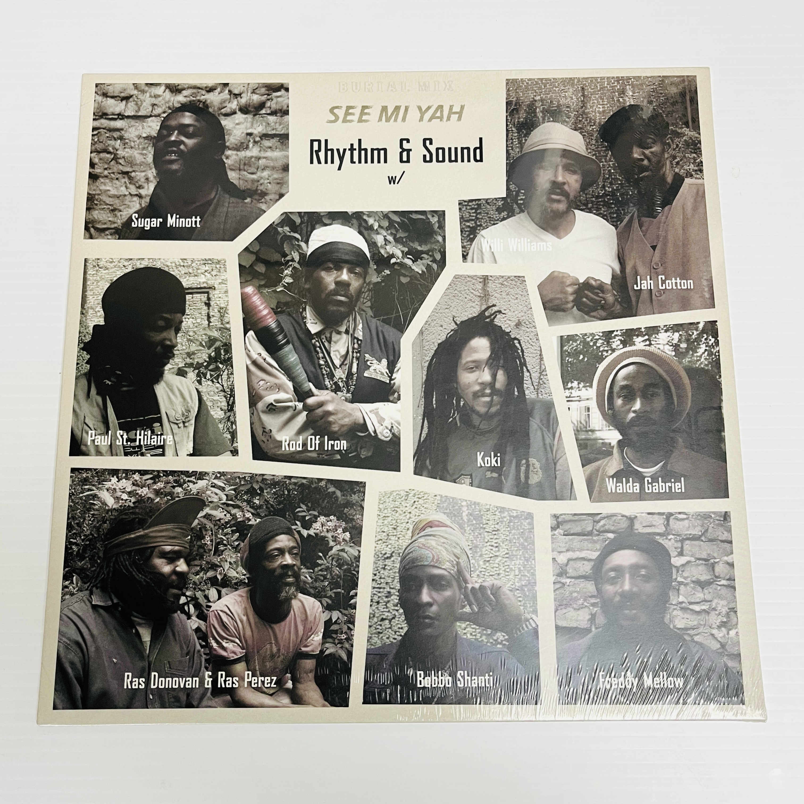

Rhythm & Sound - See Mi Yah

Track Listing
A1 See Mi Yah
A2 Dem Never Know
A3 Rise And Praise
A4 Truly
A5 Lightning Storm
B1 Let Jah Love Come
B2 Boss Man
B3 Poor People Must Work
B4 Let We Go
B5 Free For All
B6 See Mi Version
Catalog Number BMLP-4
Release Date 2026
Record Label Burial Mix
Format LP
“Superb, revered version-excursion in the grand tradition of Tempo Explosion. Willie Williams kicks off imperiously, on a classic Rhythm & Sound rhythm adroitly evoking Niney’s way with horns. Sugar and Tikkiman take a turn, besides Berlin faces like Cotton and Rod Of Iron. No one puts a foot wrong.” — Honest Jon’s Records